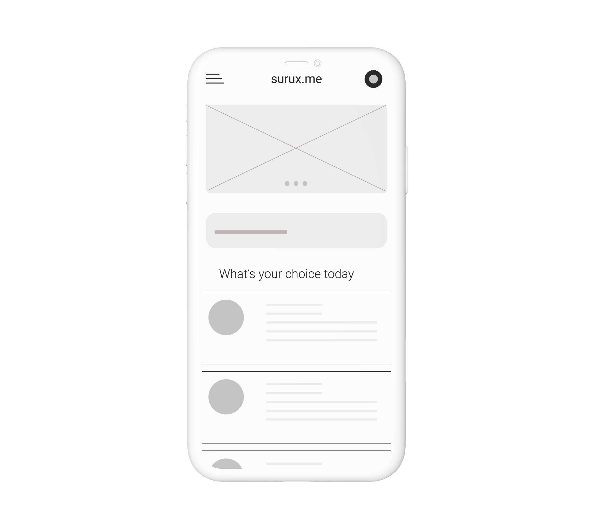
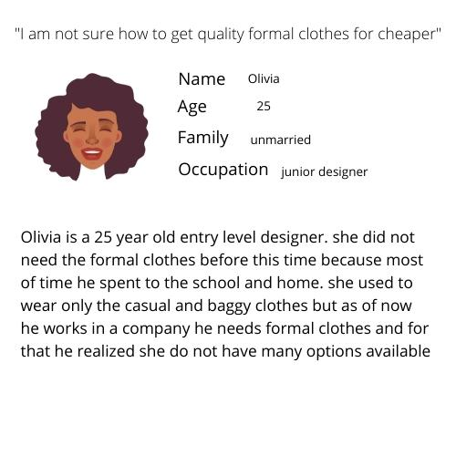
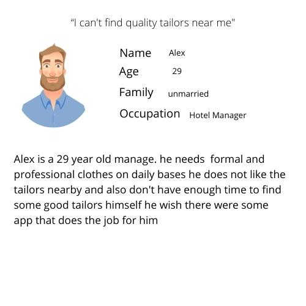
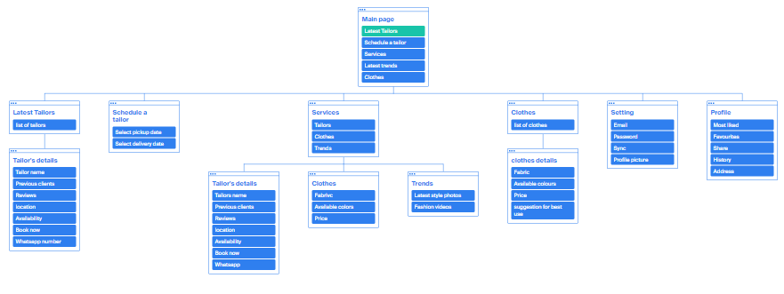
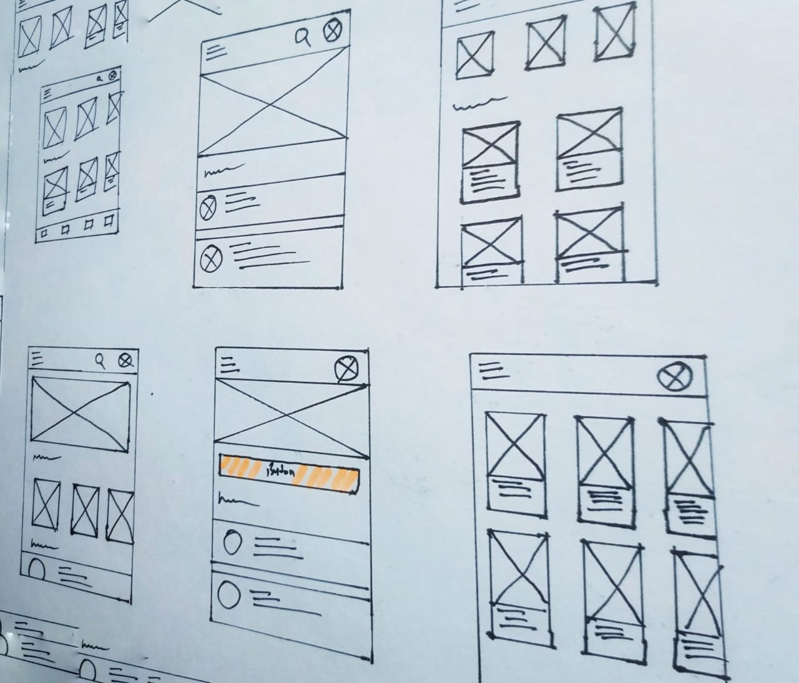
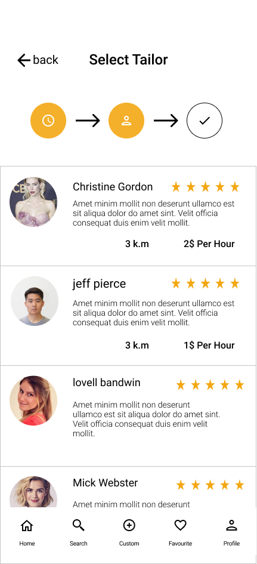

Project vision
sew is a Tailor discovery service that primarily allows for users to search for tailors with the press of the button With current tailor applications, the data visualization and sharing of reviews are either non-existent, very limited, or extremely outdated. Sew aims to fix that by bridging the gap between potential users themselves
Challenges
- Provide a seamless booking process
- Create a minimalistic UI while keeping products as the focus
- Allow users to see background of tailor
- Allow users to find tailor near them

Kickstart
Starting off, I asked myself a few initial questions. Who is our primary user? What kind of goals do they have? Why would someone want to use this application? Just how large of a scope do I want this project to be? After interviewing four participants to establish archetypes later on, it became evident that the goals they wanted to accomplish all fell within the same categories; finding out more about their clothing habits & identifying more of the clothes they like.

competitive analysis
In order to construct a concise and solid foundation for Sew, I had to venture out and see what the prominent tailor applications were already doing and what user goals they were not reaching. I evaluated several features deemed vital from user surveys and identified which ones Sew could capitalize on to have a leg up over other applications.
I found that none of the main competitors offered user profiles for users.
darzi on call offers a lot of variety but ux and user flow is not upto the mark.



Information Architecture

P&P Wireframer
Before moving onto high fidelity wireframes and mocks, I wanted to get a feel for what the core of the app would look like when put in front of me.

wireflow
.png)
×


CHALLENGE 1
Seamless tailor booking
Creating easy-to-understand data visuals for users was a goal that helped drive this project as far as it did. I solved this issue by using simple navigation to help the user understand on a more familiar level.
CHALLENGE 2
Seamless exploration
Before establishing a familiar navigation throughout the app, I had to decide what kind of navigation would work best for the user. I decided to test a sub navigation similar to the ones in apps like Instagram. Placing the navigation between the cover and the main content of the screen allowed me to create a natural bridge between contents of the screen.

CHALLENGE 3
Transparency
In our app user can directly see how much does tailor take no middle man no extra cost direct tailor to user user can see the distance so just in case if user directly want to go to there store they can do that as well
CHALLENGE 4
Tailor Reviews
In competitive analysis i found out that no competetion allows users to read write reviews or even show who will be sewing users clothes i thought that's a huge hole between user and the tailor so here i am to fill this gap and allows users to read write reviews which helps a lot to users to make their decisions easy
Style guide
Utilizing colors consisting of and calm colors felt like the perfect fit for Sew's branding. The yellow helps evoke a happy feeling out of users , and paired with the black it creates a nice balance between calm and energetic. The main typeface of choice for the app is Karla. I felt this typeface best fit the app do to it's extreme versatility through uppercase and lowercase styling.
takeaways
Being a lover of formal dresses myself, working on Sew was incredibly rewarding. I got to experiment with some of the new Adobe XD features, and narrow down my design process. Although I was not able to fully flesh out other features and designs I wanted to within Sew due to time constraints, it's not to say I won't try to incorporate them in future projects down the line.